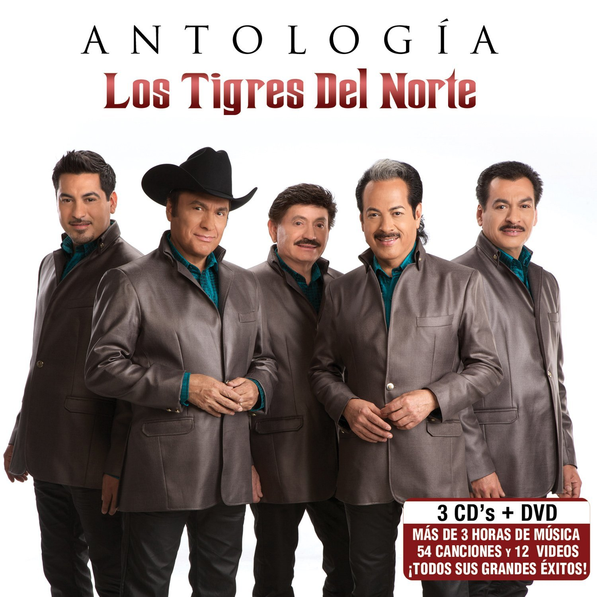
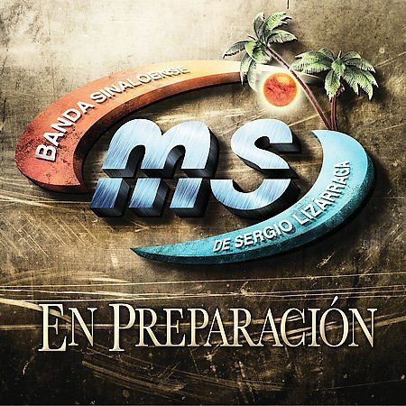

Los Tigres del Norte
Es un grupo de música regional mexicana, denominada también música norteña (por haber surgido en el norte de México). Es una de las agrupaciones más reconocidas del género, debido a su larga trayectoria y a sus éxitos a nivel de la comunidad mexicana en la diáspora. Han vendido más de 32 millones de copias en todo el mundo. Su campo principal son los corridos, los cuales han sido censurados en varias ocasiones, incluso en su propio país.


La Banda MS
Se formó en el año 2003 en el puerto de Mazatlán, en el estado de Sinaloa con 15 integrantes. Las siglas MS en su nombre provienen de las iniciales de Mazatlán, Sinaloa. Uno de los fundadores e integrante de la agrupación fue Julión Álvarez, el cual estaba dando sus inicios como cantante del género de banda.